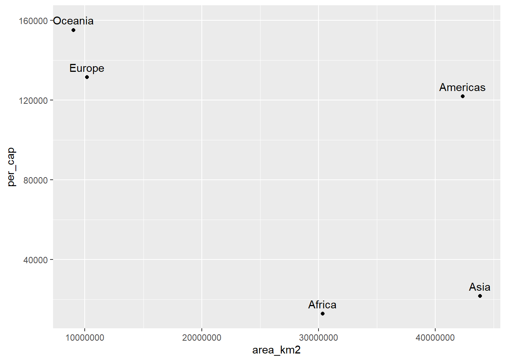

Joins
Estamos juntando dados de tabelas o tempo todo. Por diversos motivos parte das informações estão em uma tabela e parte estão em outra e precisamos parear esses dados para seguir com a análise. No Excel essa movimentação é feita pela função PROCV(), só que de maneira mais limitada.
O pacote dplyr fornece uma família de funções para trabalhar com ‘joins’ no R. Vamos ver como as principais funcionam e como podemos aplicar nas nossas análises.
Primeiro, temos que ter claro que iremos fazer a operação com duas tabelas e deixar claro quem é a tabela 1 (esquerda) e a tabela 2 (direita). A tabela 1 normalmente é nossa referencia e a partir dela iremos buscar algumas ou todas informações da tabela 2 a partir de pontos em comum. Veja no esquema abaixo as 4 principais que envolvem ‘joins’.

library(tidyverse)
set.seed(12345)
x <- tibble(
chave = LETTERS[c(1:3, 5)],
valor1 = sample(1:10, 4)
)
y <- tibble(
chave = LETTERS[c(1:4)],
valor2 = sample(1:10, 4),
valor3 = sample(20:30, 4)
)Com base na tabela x, traga os valores da tabela y que correspondam com as chaves que existem na tabela x. Notem que a tabela 1 é o objeto x e eu quero ele como referencia.
Mas se eu quiser utilizar a tabela do objeto y como referência, ou eu mudo os objetos de posição na função ou utilizo a função right_join.
Agora, considerando apenas o que tem em comum nas duas tabelas e depois o juntando todas as possibilidades.
Vimos até agora os ‘joins’ que movimentam colunas de uma tabela para outra, mas há os ‘joins’ que servem para filtrar linhas na tabela de referencia e não movimentam informações entre as tabelas. O semi_join mantém os registros com base na coluna chave que existem nas duas tabelas. Já o anti_join mantém o registro que existe na tabela 1, mas não na tabela 2.
Exercícios
- Carregue o pacote
gapminderaplique a funçãoglimpsena objetogapminderque pertence ao respectivo pacote.
#> Observations: 1,704
#> Variables: 6
#> $ country <fct> Afghanistan, Afghanistan, Afghanistan, Afghanistan, ...
#> $ continent <fct> Asia, Asia, Asia, Asia, Asia, Asia, Asia, Asia, Asia...
#> $ year <int> 1952, 1957, 1962, 1967, 1972, 1977, 1982, 1987, 1992...
#> $ lifeExp <dbl> 28.801, 30.332, 31.997, 34.020, 36.088, 38.438, 39.8...
#> $ pop <int> 8425333, 9240934, 10267083, 11537966, 13079460, 1488...
#> $ gdpPercap <dbl> 779.4453, 820.8530, 853.1007, 836.1971, 739.9811, 78...- Importe o arquivo
continents.xlsxe mostre seu conteúdo na tela.
#> # A tibble: 6 x 4
#> continent area_km2 population percent_total_pop
#> <chr> <dbl> <dbl> <dbl>
#> 1 Africa 30370000 1022234000 15
#> 2 Americas 42330000 934611000 14
#> 3 Antarctica 13720000 4490 0
#> 4 Asia 43820000 4164252000 60
#> 5 Europe 10180000 738199000 11
#> 6 Oceania 9008500 29127000 0.4- Faça um join entre a tabela
gapminderecontinents, ondegapminderserá a tabela de referência. Salve essa operação em um objeto chamadogap_cont.
#> # A tibble: 1,704 x 9
#> country continent year lifeExp pop gdpPercap area_km2 population
#> <fct> <chr> <int> <dbl> <int> <dbl> <dbl> <dbl>
#> 1 Afghan~ Asia 1952 28.8 8.43e6 779. 43820000 4164252000
#> 2 Afghan~ Asia 1957 30.3 9.24e6 821. 43820000 4164252000
#> 3 Afghan~ Asia 1962 32.0 1.03e7 853. 43820000 4164252000
#> 4 Afghan~ Asia 1967 34.0 1.15e7 836. 43820000 4164252000
#> 5 Afghan~ Asia 1972 36.1 1.31e7 740. 43820000 4164252000
#> 6 Afghan~ Asia 1977 38.4 1.49e7 786. 43820000 4164252000
#> 7 Afghan~ Asia 1982 39.9 1.29e7 978. 43820000 4164252000
#> 8 Afghan~ Asia 1987 40.8 1.39e7 852. 43820000 4164252000
#> 9 Afghan~ Asia 1992 41.7 1.63e7 649. 43820000 4164252000
#> 10 Afghan~ Asia 1997 41.8 2.22e7 635. 43820000 4164252000
#> # ... with 1,694 more rows, and 1 more variable: percent_total_pop <dbl>- Com base no objeto
gap_cont, filtre as informações do continenteAntarctica.
#> # A tibble: 24 x 9
#> country continent year lifeExp pop gdpPercap area_km2 population
#> <fct> <chr> <int> <dbl> <int> <dbl> <dbl> <dbl>
#> 1 Austra~ Oceania 1952 69.1 8.69e6 10040. 9008500 29127000
#> 2 Austra~ Oceania 1957 70.3 9.71e6 10950. 9008500 29127000
#> 3 Austra~ Oceania 1962 70.9 1.08e7 12217. 9008500 29127000
#> 4 Austra~ Oceania 1967 71.1 1.19e7 14526. 9008500 29127000
#> 5 Austra~ Oceania 1972 71.9 1.32e7 16789. 9008500 29127000
#> 6 Austra~ Oceania 1977 73.5 1.41e7 18334. 9008500 29127000
#> 7 Austra~ Oceania 1982 74.7 1.52e7 19477. 9008500 29127000
#> 8 Austra~ Oceania 1987 76.3 1.63e7 21889. 9008500 29127000
#> 9 Austra~ Oceania 1992 77.6 1.75e7 23425. 9008500 29127000
#> 10 Austra~ Oceania 1997 78.8 1.86e7 26998. 9008500 29127000
#> # ... with 14 more rows, and 1 more variable: percent_total_pop <dbl>- Faça um heatmap considerando apenas os países da
asia, onde no eixo x temos oyear, no eixo y ocountrye na dimensão de preenchimentolifeExp
Dicas: filter, geom_tile.

- Faça um gráfico de dispersão com a area do continente e a renda per capta. Para isso, considere
GDP = gdpPercap * popcomo o PIB do país. Em seguida some o PIB em função do continente. A tabelacontinentsinforma a população do continente, divida o PIB do continente pela população do mesmo e salve e chame essa variável deper_cap, faça o gráfico proposto em seguida.
Dicas: summarize, left_join, geom_text, nudge_y.